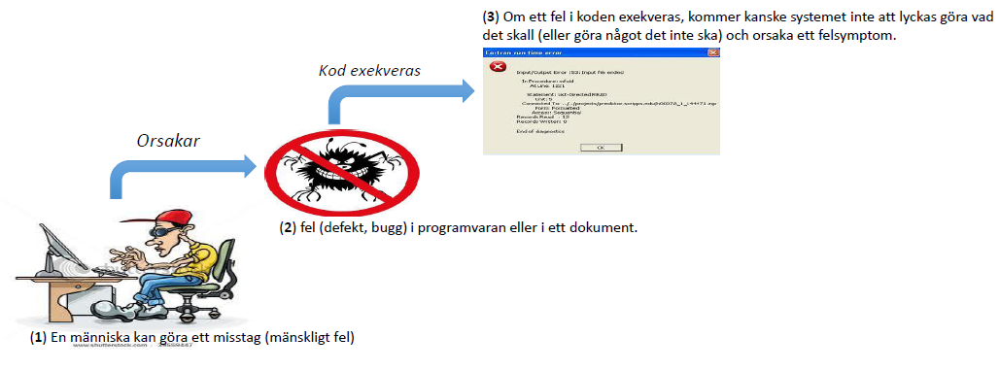
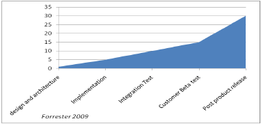

Grunderna inom test
Varför är test nödvändigt?!
Programvarusystem är en integrerad del av livet, från verksamhetstillämpningar
(t.ex. bankverksamhet) till konsumentprodufkter(t.ex. bilar).
De flesta har upplevt att programvaran inte fungerar som man förväntat
sig. Programvara som inte fungerar korrekt kan leda till många problem,
t.ex. förlust av pengar, tid eller affärsmässigt rykte och kan till och
med orsaka skada eller dödsfall.
MISSTAG, DEFEKT, FELSYMPTOM

Testningens roll

- Testning av system och dokumentation kan hjälpa till att reducera risken för att problem uppstår under drift men också bidra till programvarusystemets kvalitet om fel rättas innan systemet frisläpps för användning i drift.
- Det kan också krävas test av programvara för att uppnå kontraktsmässiga eller legala krav eller för att uppfylla industrispecifika standarder.
test och kvalitet
- Med hjälp av test är det möjligt att mäta kvaliteten på programvaran i termer av hittade fel för både funktionella och icke-funktionella programvarukrav och egenskaper (t.ex. pålitlighet, användbarhet, effektivitet, underhållbarhet och portabilitet).
- Test kan ge ett förtroende för programvarans kvalitet om inga eller få fel upptäcks. Ett korrekt designat testfall som godkänns minskar den totala risknivån för ett system. När test hittar fel och dessa åtgärdas, ökar kvaliteten hos programvarusystemet.
- Erfarenheter från tidigare projekt bör tas tillvara. Genom att förstå de grundorsakerna till de hittade felen i andra projekt kan processerna förbättras vilket i sin tur bör förhindra att dessa fel dyker upp igen och, som en konsekvens, förbättra kvaliteten hos framtida system. Detta är en aspekt i arbetet att kvalitetssäkra programvaran.
- Test bör vara en del av de kvalitetssäkrande aktiviteterna, tillsammans med utvecklingsstandarder, utbildning och felanalys.
Hur mycket testning behövs?
- Beslut hur mycket testning som behövs bör ta hänsyn till risknivån, inklusive tekniska, säkerhetsrelaterade och affärsmässiga risker och projektbegränsningar som tid och budget.
- En utförd testning bör ge tillräcklig information för beslutsunderlag. Detta för att intressenter kan fatta beslut om frisläppande av programvaran eller systemet, beslut om att gå vidare till nästa utvecklingssteg eller beslut om överlämnande till kund.
Kostnaden för defekter
- Studier hos IBM har visat att det introduceras 60 fel (defekter) per tusen rader kod från och med kravfasen i projektets start till och med implemenationsfasen.
- Enligt Forrester är kostnaden för att rätta till en defekt i produktion 30 gånger så hög som för att göra motsvarande ändring i krav- eller designfasen.
- Studier har visat att en bug som upptäcks i produktion i snitt tar 17 timmar att åtgärda (Eriksson, U., Test och kvalitetssäkring av IT-system, 2008)

Övning
Beskriv, med exempel, på vilket sätt ett fel i ett program kan orsaka skada för en person, för miljön eller för ett företag.
Övning
Förklara och jämför begreppen misstag, defekt, fel, bugg, felsymptom med hjälp av exempel.
Vad är testning?
Q: Är det bara att exekvera testfall, d.v.s. exekvera programvaran?
A: Det är en del av testningen, men fler testaktiviteter ingår också
Testning innefattar aktiviteter, såsom:
- planering och styrning
- val av testvillkor
- design och exekvering av testfall
- kontroll av resultat
- utvärdering av avslutskriterier
- rapportering om testprocessen och systemet som testas
- avslutning eller stängning (t.ex. efter det att en testfas avslutats)
- granskning av dokument (även källkod)
Mål för test
- att hitta fel
- att få förtroende för kvalitetsnivån
- att tillhandahålla information för att kunna ta beslut
- att förebygga fel
Olika faser - olika mål
Granskning av dokument (t.ex. kravspecifikationer)
Identifiering och lösning av avvikelser hjälper också till att förhindra
att fel uppstår i koden
I utveckling - provocera så många felsymptom som möjligt så att fel kan åtgärdas
I acceptanstest - att bekräfta att systemet fungerar som förväntat, få förtroende för att det uppfyller ställda krav.
I vissa fall kan det huvudsakliga målet för test vara att:
- Utvärdera kvaliteten hos programvaran (utan avsikt att åtgärda felen)
- Att ge information till intressenter om risken med att frisläppa systemet vid ett givet tillfälle
- Underhållstest - testning för att konfirmera att inga nya fel har introducerats när ändringarna infördes.
- Driftstestning - att utvärdera systemets egenskaper i en driftsliknande miljö.
test vs avlusning

- Avlusning och test är olika saker.
- Dynamisk testning kan visa på felsymptom som orsakas av fel.
- Avlusning är den utvecklingsaktivitet som identifierar, analyserar och avlägsnar orsaken till felsymptomet.
- Efterföljande omtest av rättningar av en testare försäkrar att rättningen verkligen åtgärdade felsymptomen.
- Ansvaret för varje aktivitet är vanligtvis att testare testar och utvecklare avlusar.
Övning
Ge exempel på syften med testning i olika faser i programvarans livscykel
Sju testprinciper
Ett antal testprinciper har föreslagits under de senaste 40 åren och de erbjuder allmänna riktlinjer som är gemensamma för all testning.
- Princip 1 – Test visar att det finns fel
- Princip 2 – Uttömmande testning är omöjlig
- Princip 3 – Tidig testning
- Princip 4 – Ansamlingar av fel
- Princip 5 – Immunitets- paradoxen
- Princip 6 – Test beror på sammanhang
- Princip 7 – Frånvaro-av-fel-fallgropen
Princip 1 – Test visar att det finns fel
Test kan visa att fel finns men kan inte visa att det inte finns några fel. Test minskar sannolikheten för att oupptäckta fel finns i programvaran men, även om inga fel hittas, så är det inget bevis för att programvaran är felfri.
Princip 2 – Uttömmande testning är omöjlig
Att testa allt (alla kombinationer av inmatningar och förutsättningar) är inte lämpligt, förutom i triviala fall. Istället för uttömmande testning används risker och prioriteringar för att fokusera testansträngningarna.
Princip 3 – Tidig testning
För att hitta fel tidigt skall testaktiviteterna påbörjas så tidigt som möjligt i programvarans eller systemets livscykel och fokuseras på definierade mål.
Princip 4 – Ansamlingar av fel
Testinsatsen skall fokuseras proportionellt mot den förväntade, och senare konstaterade, feltätheten hos modulerna. Ett litet antal moduler innehåller de flesta fel som upptäcks vid testning före frisläppande eller är upphov till flest felsymptom i drift.
Princip 5 – Immunitets- paradoxen
Om samma tester upprepas gång på gång så kommer samma uppsättning av testfall till slut inte att upptäcka några nya fel. För att övervinna denna ”immunitets-paradox” behöver testfallen regelbundet granskas och revideras och annorlunda tester behöver skrivas för att motionera olika delar av programvaran eller systemet för att möjligen hitta fler fel.
Princip 6 – Test beror på sammanhang
Testning sker på olika sätt i olika sammanhang. Säkerhetskritisk programvara testas till exempel inte på samma sätt som ett e-handels system.
Princip 7 – Frånvaro-av-fel-fallgropen
Att hitta och åtgärda fel hjälper inte om systemet som byggts är oanvändbart och inte uppfyller användarnas behov och förväntningar.
Övning
Förklara de sju grundläggande principerna inom test
- Princip 1 – Test visar att det finns fel
- Princip 2 – Uttömmande testning är omöjlig
- Princip 3 – Tidig testning
- Princip 4 – Ansamlingar av fel
- Princip 5 – Immunitets- paradoxen
- Princip 6 – Test beror på sammanhang
- Princip 7 – Frånvaro-av-fel-fallgropen
Grundläggande testprocess
Den mest synliga delen av testprocessen är testexekveringen. Men för att en testprocess ska vara effektiv och ändamålsenlig, bör testplaner även innehålla information om hur mycket tid som skall användas för att planera testerna, designa testfallen, förbereda exekveringen och utvärdera resultaten. Den grundläggande testprocessen består av följande huvudaktiviteter:
- testplanering och styrning
- testanalys och design
- realiserande och exekvering av tester
- utvärdering av avslutskriterium och rapportering
- testavslutsaktiviteter
Testplanering och styrning
Testplanering är den aktivitet som görs för att definiera testmålen och specificera övriga testaktiviteterna med syfte att nå målen och att slutföra uppdraget.
Teststyrning är den pågående aktivitet som jämför faktiskt framåtskridande mot plan och rapporterar status och avvikelser från planen. I detta ingår att vidta nödvändiga åtgärder för att slutföra uppdraget och att nå målet för projektet. För att kunna styra testarbetet bör testaktiviteterna övervakas under hela projektet. Testplaneringen tar också hänsyn till återkoppling från övervakning och uppföljande aktiviteter.
Testanalys och design
Testanalys och design är den aktivitet där generella testmål omvandlas till påtagliga testvillkor och testfall.
Analys och design har följande huvuduppgifter:
- Att granska testbasen (såsom krav, risknivå1, riskanalysrapporter, specifikationer, arkitektur, design, gränssnitt).
- Evaluera testbarheten av testbasen och testobjekten
- Att identifiera och prioritera de testvillkor som baserats på analys av testobjekten, specifikationen samt programvarans beteende och struktur.
- Att utveckla och prioritera högnivåtestfall.
- Att identifiera nödvändiga testdata för testvillkor och testfall.
- Att designa hur testmiljön skall sättas upp och att identifiera den infrastruktur och de verktyg som behövs.
- Att skapa en dubbelriktad spårbarhet mellan testbas och testfall.
Realiserande och exekvering av tester
Realiserande och exekvering av tester är den aktivitet där testprocedur eller skript definieras genom att kombinera testfall i en speciell ordning och inkludera nödvändig information som behövs för exekvering, miljön iordningställs och testerna körs.
Realiserande och exekvering av tester har följande huvuduppgifter:
- Färdigställa, realisera och prioritera testfall (inklusive identifiering av testdata).
- Att utveckla och prioritera testprocedurer, skapa testdata och, valfritt, förbereda testexekveringsplattform samt skriva automatiserade testskript.
- Att skapa testsviter baserade på testprocedur för en effektiv testexekvering.
- Att verifiera att testmiljön är rätt uppsatt.
- Verifiera och uppdatera spårbarheten mellan testbas och testfall.
- Att exekvera testprocedur, antingen manuellt eller genom att använda testexekveringsverktyg, enligt det planerade schemat.
- Att logga utfallet av testexekveringen och spela in identiteter och versioner av programvaran som testas, testverktyg och testvara.
- Att jämföra aktuellt resultat med förväntat resultat.
- Att rapportera skillnader i form av avvikelser och analysera dem med syftet att fastställa orsaken till dem (t.ex. ett fel i koden, i specificerat testdata, i testdokumentet eller ett misstag i utförandet av testen).
- Att repetera testaktiviteterna som ett resultat av gjorda åtgärder för varje avvikelse. Det kan till exempel vara omexekvering av en test som tidigare gått fel med syfte att bekräfta att felet är åtgärdat (omtestning av felrättningar), exekvering av ett korrekt test och/eller exekvering av tester med syfte att försäkra sig om att inga fel har introducerats i oförändrade delar av programvaran eller att felrättningarna inte blottställde andra fel (regressionstestning).
Utvärdering av avslutskriterier och rapportering
Att utvärdera avslutskriterier är den aktivitet där testexekveringen utvärderas mot de definierade målen. Detta bör göras för varje testnivå.
Utvärdering av avslutskriterier har följande huvuduppgifter:
- Att kontrollera testloggar mot de avslutskriterier som specificerats vid testplaneringen.
- Att bedöma om fler tester behövs eller om avslutskriterierna behöver ändras.
- Att skriva en slutlig testrapport avsedd för intressenterna.
Testavslutsaktiviteter
Vid testavslut samlas data in från de avslutade aktiviteterna för att sammanfatta erfarenheter, fakta och mätetal och för att arkivera testmaterial. Detta kan ske t.ex. vid frisläppande av ett programvarusystem, vid ett fullbordat (eller avbrutet) testprojekt, när en milstolpe har nåtts eller en underhållsutgåva har blivit färdig.
Vid testavslut ingår följande huvuduppgifter:
- Att kontrollera vilka planerade leverabler som blivit levererade.
- Att kontrollera att avvikelserapporter är stängda och att initiera ändringsbegäran för de som fortfarande är öppna.
- Att kontrollera den dokumentation som visar godkännande av systemet.
- Att göra klart och arkivera testvaran, testmiljön och testinfrastrukturen för senare återanvändning.
- Att lämna över testvaran till förvaltningsorganisationen.
- Att analysera lärdomar för att identifiera nödvändiga förändringar av framtida utgåvor och projekt.
- Att använda insamlad information till att förbättra testmognaden.
Testningens psykologi
Det tankesätt som man måste ha när man testar (vill försöka visa att något inte fungerar) skiljer sig från det man har när man utvecklar programvara (vill visa att något fungerar).
Oberoende
En viss grad av oberoende (för att undvika författarens förutfattade mening) gör ofta att testaren blir mer effektiv i att hitta fel och felsymptom. Oberoendet är emellertid inte en ersättning för förtrolighet, utvecklare kan själv hitta många fel i sin egen kod på ett effektivt sätt. Flera nivåer av oberoende kan definieras, listade nedan från lågt till högt:
- Tester utvecklade av personer som skrev den programvara som skall testas (låg nivå av oberoende).
- Tester utvecklade av andra personer (t ex från utvecklingsgruppen).
- Tester utvecklade av personer som tillhör en annan organisatorisk grupp (t.ex. en oberoende testgrupp) eller testspecialister (t.ex. en användbarhetstest- eller prestandatestspecialist).
- Tester utvecklade av personer från en annan organisation eller annat företag (d.v.s. outsourcing eller certifiering av en extern organisation).
Testarens egenskaper
Att identifiera felsymptom under testningen kan uppfattas som kritik mot produkten och mot utvecklaren eller författaren. Testning blir därför ofta sedd som en destruktiv aktivitet trots att det är mycket konstruktivt när det gäller hantering av produktrisker. Att leta efter felsymptom i ett system kräver nyfikenhet, professionell pessimism, ett kritiskt öga, uppmärksamhet på detaljer, god kommunikation med utvecklare och en erfarenhet på vilken man kan basera felgissning.
Kommunicera fel
Kommunikationsproblem kan uppstå, speciellt om testarna bara ses som budbärare av oönskade nyheter om fel, defekter och avvikelser. Det finns flera sätt att förbättra kommunikationen och förhållandena mellan testare och andra:
- Börja med samarbete istället för strider – påminn alla om det gemensamma målet att få ett system med bättre kvalitet.
- Kommunicera avvikelser hos produkten på ett neutralt, faktafokuserat sätt utan att kritisera personen som skapat den, skriv till exempel objektiva och faktamässiga avvikelserapporter och granska det som hittas.
- Försök att förstå hur den andra personen känner sig och varför han/hon reagerar som han/hon gör.
- Bekräfta att den andra personen har förstått vad du har sagt och tvärtom.
Övningar
- När det gäller testning, vem har den högsta graden av oberoende?
- Diskutera för- och nackdelar med att låta utvecklarna testa sin egen kod.
- Föreslå tre sätt att undvika konfrontationer mellan testare och utvecklare
Etiska regler
- ALLMÄNHETEN - Certifierade programvarutestare skall handla i allmänhetens intresse.
- KUND OCH ARBETSGIVARE - Certifierade programvarutestare skall agera i kunds och arbetsgivares intresse, i överensstämmelse med allmänhetens intresse.
- PRODUKT - Certifierade programvarutestare skall försäkra sig om att de leverabler de tillhandahåller (för produkter och system som de testar) motsvarar högsta möjliga professionella standard.
- OMDÖME - Certifierade programvarutestare ska upprätthålla integritet och oberoende sina professionella omdömen.
- LEDNING - Certifierade testledare och testkoordinatorer inom programvaruutveckling skall bidra med och främja etiska tillvägagångssätt vid ledningen av programvaruprojekt.
- YRKESROLL - Certifierade programvarutestare skall främja integriteten och anseendet för testyrket i överensstämmelse med allmänhetens intresse.
- KOLLEGOR - Certifierade programvarutestare skall vara rättvisa mot och stötta sina kollegor samt främja samarbete med programvaruutvecklare.
- SJÄLV – Certifierade testare skall delta i ett livslångt lärande avseende sitt yrkes praxis och främja ett etiskt tillvägagångssätt gentemot yrkets praxis.
Quiz
Misstag och myter kring test
Misstag 1 - Management via email
Uppmuntra kommunikation ansikte mot ansikte
Misstag 2 - Testaren ansvarig för kvalitet
Misstag 3 - Utvärdera enligt...
- Testaren på antal funna defekter
- Utvecklaren på antal producerade defekter
Konsekvenser:
- Friktion, konflikter mellan "gruppen"
- Fokus på lätt att hitta ännu triviala buggar
- Dold information
Misstag 4 - Brist på kunskap om test
Många betraktar inte test som en teknisk uppgift.